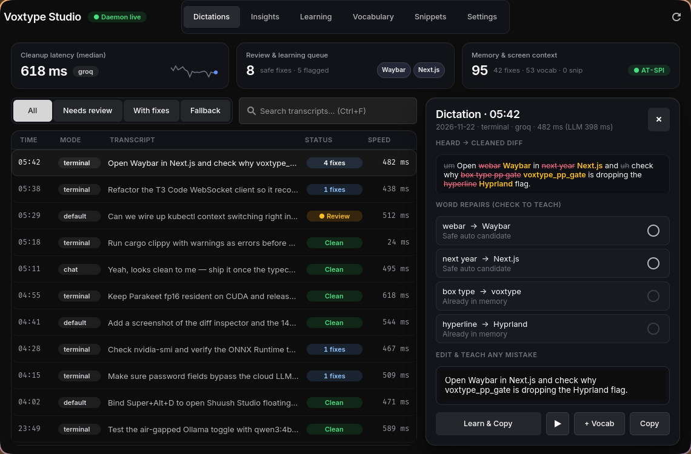
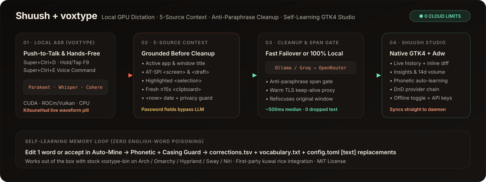

Local GPU dictation that actually knows your codebase.
The open-source Superwhisper & Wispr Flow experience for Linux & Wayland. Parakeet, Whisper, or Cohere GGUF locally on your GPU — paired with 5-source screen context, anti-paraphrase cleanup, phonetic self-learning, and a native GTK4 Studio.
Shuush Studio — live diffs, insights, and 1-click offline mode.
Zero Electron bloat. Dictations stream in live via Gio.FileMonitor, diffs highlight every repaired symbol, and self-learning syncs grounded jargon straight into voxtype's daemon replacements.

Feels native to Wayland. Never rewrites what you meant.
Recorded live on an Arch + Hyprland laptop screen via gpu-screen-recorder. Every cleanup output passes through a deterministic span gate so LLMs fix mishearings using your screen context without hallucinating rewrites.
Wispr Flow vs Superwhisper vs Shuush + voxtype
| Capability | Wispr Flow | Superwhisper (Omarchy) | Shuush + voxtype |
|---|---|---|---|
| Price & monthly word cap | $15/mo | 10,000 free words/mo | Free · MIT · Unlimited |
| Native Linux / Wayland | No (macOS/Win) | Omarchy / macOS | Hyprland · Sway · Niri · Omarchy · Arch |
| GPU & ASR freedom | Cloud only | Apple Silicon / Cloud | NVIDIA CUDA · AMD/Intel Vulkan · CPU |
| Context sources | App + screen | App + selection + clipboard | App + AT-SPI Screen & Draft + Selection + ≤15s Clipboard + Date |
| Offline privacy mode | No | Paid local tier | 1-click Air-Gapped Ollama + AT-SPI password bypass |
| Self-learning dictionary | Proprietary | Manual / AI audit | Phonetic auto-mine + reject list + daemon [text] sync |
Works on stock voxtype-bin in 3 commands.
Powered by peteonrails/voxtype (MIT). First-party support included for Omarchy and the kuwai Hyprland rice.

yay -S voxtype-bin wtype wl-clipboard jq python-gobject libadwaita gtk4 at-spi2-core voxtype setup git clone https://github.com/KitsuneKode/shuush.git && cd shuush ./install.sh --wire-config shuush doctor && shuush studio
-- ~/.config/hypr/user.lua K.voxtype_scripts = K.home .. "/.local/share/shuush/libexec/" -- Automatically wires Super+Ctrl+D, F9 hold/tap, -- Super+Ctrl+E command mode, double-tap Esc guard, -- Super+Alt+D Studio, kuwai-notify & VOXTYPE_OSD_HOST.
Direct answers before you install.
Why build Shuush on top of voxtype instead of forking it?
voxtype already nails low-level PipeWire audio capture, CUDA/Vulkan/CPU inference (Parakeet, Whisper, Cohere GGUF), and Wayland typing. Keeping Shuush as a clean companion layer means zero fork drift, instant compatibility with stock voxtype-bin from Arch AUR and Omarchy, and clear attribution to Peter Jackson's MIT daemon.
How does the anti-paraphrase span gate prevent LLM hallucinations?
voxtype_pp_gate.py aligns every cleaned reply back against the raw recognizer transcript. Ordinary English words are never rewritten unless grounded by a phonetic match in your vocabulary, visible AT-SPI screen, highlighted selection, or fresh (≤15s) clipboard. If a cloud LLM drifts or times out, deterministic cleanup runs locally so text is never lost.
Does this work on AMD, Intel, or CPU-only laptops?
Yes. Studio detects NVIDIA CUDA, AMD ROCm/Vulkan, Intel Vulkan iGPUs, and CPU setups automatically and reads whichever voxtype engine you configured (parakeet, whisper, cohere, or moonshine).